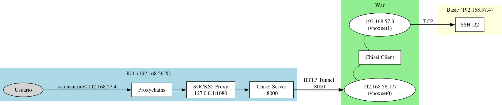
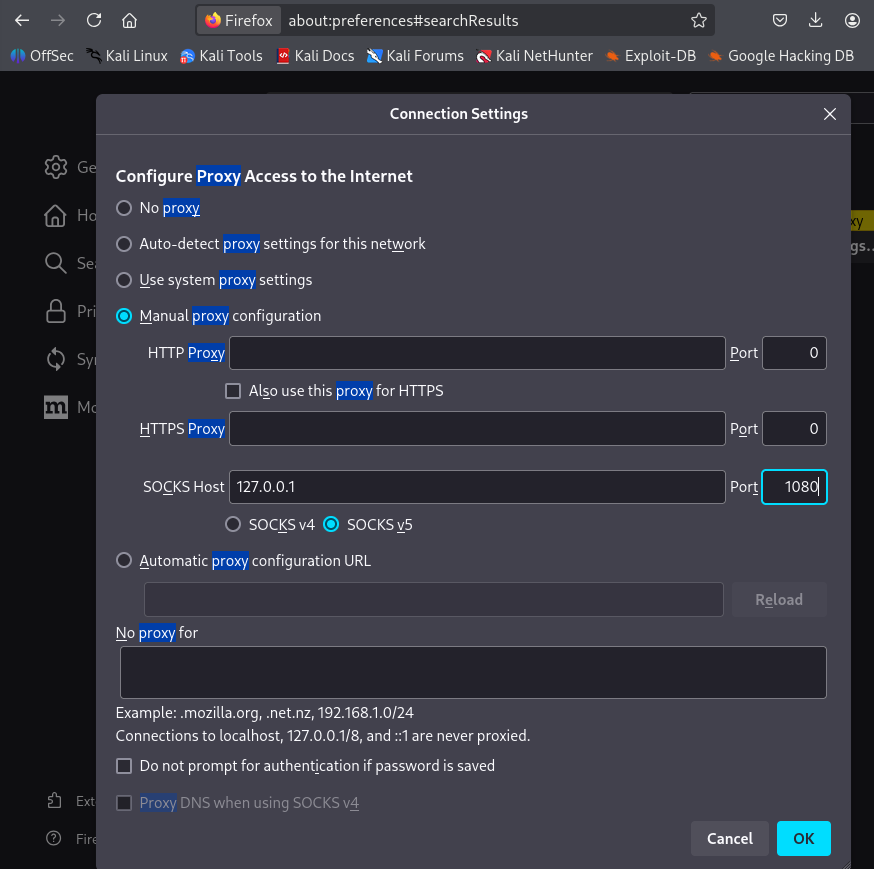

Proxychains e SOCKS no Pivoting
Introdución ao Problema do Pivoting
Nun escenario de pivoting, o atacante necesita acceder a unha rede interna á que non ten conectividade directa. A solución clásica pasa por empregar unha máquina comprometida como ponte ou intermediario.
Pero xurde un problema fundamental: como forzamos as nosas ferramentas locais (nmap, hydra, ssh, navegador) a usar esa ponte?
Aquí é onde entran en xogo SOCKS e Proxychains.
Que é SOCKS e por que é fundamental
Definición
SOCKS (Socket Secure) é un protocolo de rede que actúa como proxy a nivel de aplicación, permitindo que calquera programa redirixe as súas conexións TCP/UDP a través dun servidor intermediario.
Versións de SOCKS
| Versión | Características | Uso en Pivoting |
|---|---|---|
| SOCKS4 | • Só TCP • Sen autenticación • Sen resolución DNS remota |
Básico, limitado |
| SOCKS5 | • TCP e UDP • Autenticación opcional • Resolución DNS remota • Soporte IPv6 |
Estándar no pivoting |
Por que SOCKS5 é ideal para Pivoting
- Transparencia: A aplicación cliente non precisa modificacións
- Flexibilidade: Calquera protocolo sobre TCP/UDP
- DNS remoto: As consultas DNS resolven no servidor SOCKS, non no cliente
- Sen modificación de rutas: Non require tocar
iptables,routenin NAT
Proxychains: A peza que falta
Que é Proxychains
Proxychains é unha ferramenta que intercepta as chamadas de rede dun programa e rediríxeas a través dun ou varios proxies (HTTP, SOCKS4, SOCKS5).
Funciona mediante preloading de bibliotecas (LD_PRELOAD), substituíndo as funcións de rede estándar (connect(), bind(), etc.).
Por que é necesario Proxychains
As ferramentas de hacking non teñen soporte nativo para proxies SOCKS:
| Ferramenta | Soporte SOCKS nativo | Como úsala |
|---|---|---|
| nmap | ❌ Non | proxychains nmap |
| hydra | ❌ Non | proxychains hydra |
| ssh | ✅ Si (con -o ProxyCommand) |
proxychains ssh (máis sinxelo) |
| curl | ✅ Si (--socks5) |
proxychains curl (alternativa) |
| firefox | ✅ Si (config manual) | Configuración de proxy no navegador |
Conclusión: Proxychains unifica o proceso e evita configuracións manuais en cada ferramenta.
Configuración de Proxychains
Ficheiro de configuración
Ruta: /etc/proxychains4.conf (ou ~/.proxychains/proxychains.conf)
Configuración básica
# Opciones de comportamento
dynamic_chain
proxy_dns
remote_dns_subnet 224
tcp_read_time_out 15000
tcp_connect_time_out 8000
# Lista de proxies
[ProxyList]
socks5 127.0.0.1 1080
Opcións importantes
| Opción | Descripción | Recomendación |
|---|---|---|
dynamic_chain |
Usa só proxies dispoñibles | ✅ Pivoting estándar |
strict_chain |
Todos os proxies deben funcionar | Para encadeamento múltiple |
random_chain |
Usa proxies en orde aleatoria | Para ofuscación |
proxy_dns |
Resolve DNS a través do proxy | ✅ Fundamental (evita leaks) |
quiet_mode |
Reduce saída de depuración | Opcional |
Por que proxy_dns é crítico
Sen proxy_dns:
Máquina atacante resolve dns (ex: "servidor.local") → Consulta DNS dende máquina atacante → Fallaría
Con proxy_dns:
```
Máquina atacante → SOCKS (máquina pivote) → máquina pivote resolve dns (ex: "servidor.local") → Éxito
```
**Que é un DNS Leak?**
Un DNS leak ocorre cando as consultas DNS se resolven **fóra do túnel/proxy**, revelando información sobre os destinos aos que intentas acceder e causando fallos ao intentar resolver nomes internos.
**O problema en pivoting:**
Cando usas proxychains **sen `proxy_dns`**, o teu ordenador resolve os nomes de dominio (como "servidor.local") **antes** de enviar a petición polo proxy. Isto falla porque o teu ordenador non ten acceso á rede interna.
Con `proxy_dns` activado, o nome envíase sen resolver ao proxy, e **a máquina pivote** fai a consulta DNS dende dentro da rede interna.
```bash
# En /etc/proxychains4.conf
proxy_dns # Obrigatorio para evitar DNS leaks
```
**Resultado:** As túas consultas DNS non "escapan" do túnel, e os nomes internos resolven correctamente.
Uso de Proxychains con ferramentas comúns
Escaneo de portos (nmap)
⚠️ Limitacións: SOCKS non soporta ICMP nin raw sockets
# ❌ NON FUNCIONA: SYN scan (-sS) require raw sockets
proxychains nmap -sS 192.168.57.4
# ✅ FUNCIONA: TCP Connect scan (-sT)
proxychains nmap -sT -Pn -n -p- --min-rate 3000 192.168.57.4
Parámetros obrigatorios:
- -sT: TCP Connect scan (usa connect(), compatible con SOCKS)
- -Pn: Non facer ping (ICMP non funciona a través de SOCKS)
- -n: Non resolver DNS localmente
Brute force (hydra)
Acceso SSH
Navegador web
Opción 1: Proxychains (lento)
Opción 2: Configuración nativa (RECOMENDADO)
1. Firefox → Settings → Network Settings
2. Manual proxy configuration:
- SOCKS Host: 127.0.0.1
- Port: 1080
- SOCKS v5: ✅
- Proxy DNS: ✅
Limitacións de SOCKS e Proxychains
O que NON funciona
| Técnica | Por que non funciona | Alternativa |
|---|---|---|
| Ping (ICMP) | SOCKS só TCP/UDP | Ping con TCP (nmap -sT -Pn) |
| SYN scan (-sS) | Require raw sockets | Connect scan (nmap -sT) |
| Traceroute | Require ICMP/UDP raw | Non hai alternativa real |
| ARP requests | Nivel 2 (datalink) | Executar dende máquina pivote |
Coidados ao usar Proxychains
- DNS Leaks: Sempre activar
proxy_dns - Rendimento: SOCKS engade latencia (normal en pivoting)
- Compatibilidade: Algúns programas non funcionan ben con
LD_PRELOAD - Resolución de nomes: Usar IPs sempre que sexa posible
Chisel: Creando o proxy SOCKS5
Por que Chisel é ideal para pivoting
- Executables para Windows, Linux, macOS
- Túneles inversos (reverse tunneling)
- Cifrado SSH sobre HTTP
- Un único porto para múltiples túneles
- Non require privilexios de administrador
Configuración básica
1. Servidor Chisel (Kali - Máquina Atacante)
Explicación:
- --reverse: Permite túneles inversos (cliente inicia, servidor expón)
- --port 8000: Porto de escoita para clientes Chisel
2. Cliente Chisel (Máquina comprometida)
Explicación:
- IP_KALI:8000: Conecta ao servidor Chisel
- R:socks: Crea un túnel inverso que expón un proxy SOCKS5 en Kali
3. Resultado
Chisel server en Kali escoita en:
- Puerto 8000: Para clientes Chisel
- Puerto 1080: Proxy SOCKS5 (automático ao usar R:socks)
Como funciona SOCKS nun escenario real
Escenario de exemplo: 🔗 War → Basic
┌───────────────┐ ┌─────────────────┐ ┌───────────────┐
│ Kali │ vboxnet0 │ War │ │ Basic │
│ 192.168.56.X │◄─────────►│ 192.168.56.177 │ │ │
│ │ │ 192.168.57.3 │◄─────────►│ 192.168.57.4 │
└───────────────┘ └─────────────────┘ vboxnet1 └───────────────┘
Problema: Kali non ten ruta a 192.168.57.0/24
Solución: Usar War como proxy SOCKS5
Arquitectura do túnel

Fluxo de conexión con SOCKS
1. Kali executa: proxychains ssh usuario@192.168.57.4
2. Proxychains intercepta a conexión
3. Envía a petición ao proxy SOCKS (127.0.0.1:1080)
4. Chisel Server (en Kali) recibe a petición SOCKS
5. Chisel Server envía a petición polo túnel HTTP ao Chisel Client (en War)
6. Chisel Client (en War) conecta a 192.168.57.4:22 dende War
7. Establécese un túnel bidireccional
Fluxo final:
Proxychains → SOCKS:1080 → Chisel Server (Kali) → Túnel HTTP → Chisel Client (War) → Basic:22
Exemplo completo: 🔗 Pivoting War → Basic
Paso 1: Configurar Chisel
En Kali:
Executar servidor na máquina atacante
En War:
Executar cliente na máquina comprometida
Paso 2: Configurar Proxychains na máquina atacante
Paso 3: Usar ferramentas dende a máquina atacante
Escaneo:
Brute force:
SSH:
Navegador (CUPS):

Resolución de problemas comúns
Erro: "connection refused"
Causa: O túnel SOCKS non está activo
Solución:
# Verificar que Chisel server está escoitando
ss -tlnp | grep 1080
# Verificar conexión do cliente
# Debería aparecer: "proxy#R:127.0.0.1:1080=>socks: Listening"
Erro: "Host seems down"
Causa: Nmap non pode verificar o host con ping
Solución: Sempre usar -Pn
Lentitude extrema
Causa: Proxychains en modo verbose + DNS queries
Solución:
1. Activar quiet_mode en proxychains.conf
2. Usar IPs en lugar de nomes de dominio
3. Activar proxy_dns
Firefox non usa o proxy
Causa: Configuración incorrecta
Solución:
1. Settings → Network Settings
2. Manual proxy configuration
3. SOCKS Host: 127.0.0.1, Port: 1080
4. Marcar: "SOCKS v5" e "Proxy DNS when using SOCKS v5"
Referencias
Documentación oficial
- Proxychains-ng: https://github.com/rofl0r/proxychains-ng
- Chisel: https://github.com/jpillora/chisel
- RFC 1928 (SOCKS5): https://www.rfc-editor.org/rfc/rfc1928